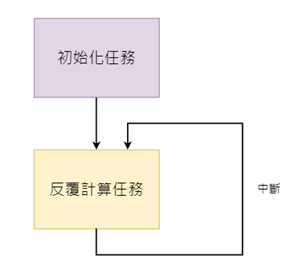

2. 概述¶
2.1. 概述¶
本文件主要介绍 ISP 的用户接口。可分为系统控制、3A、ISP 模块等三大份。 第一部分为系统控制，说明如何控制 ISP middleware。第二部分为3A，说 明如何控制 AE、AWB、AF。本区功能大多可于 Cvi PqTool 中进行调试。第 三部分为ISP 各个模块，说明如何控制 Black Level Cancellation、Color Correction Matrix、Gamma、Noise Reduction、Sharpeness等模块。本区 功能大多可于 Cvi PqTool 中进行调试。
2.2. 功能描述¶
ISP 的控制结构如 图 2.1 所示
Lens - 投聚焦光信号，射到 sensor 的感光区域
sensor - 经过光电转换，将 Bayer 格式的原始图像送给 ISP
ISP –在此处理ISP 通过运行在其上的 firmware 对 ISP逻辑， lens 和 sensor 进行相应控制，进而完成自动光圈、自动曝光、自动白平衡等功能。其中， firmware 的运转靠视频采集单元的中断驱动。PQ Tools 工具通过网口或者串口完成对 ISP 的在线图像质量调节。输出 YUV域的图像给后端的视频采集单元。

图 2.1 ISP 控制结构示意图¶
ISP 逻辑主要流程、具体概念和功能点请参见处理器手册。
2.3. 架构¶
ISP 的 Firmware 可分为三的部分。第一部分是 ISP 控制单元和基础算法库， 第二部分是3A 算法库，目前包括 AE 及 AWB。第三部分是 sensor 库。 软件 架构区分为此三大部分，并且透过注册函数回调以达到可以独立演进的目的。例 如开发者自行实作 3A 函数， 只要实作相同的接口，并且注册即可代换 Cvi 预 设的 3A 库。 ISP firmware 架构如 图 2.2 所示

图 2.2 ISP firmware 架构¶
不同的 sensor 都以回调函数的形式， 向 ISP 算法库注册控制函数。 ISP 控制 单元调度基础算法库和 3A 算法库时，将通过这些回调函数获取初始化参数，并控 制 sensor，如调节模拟增益、数字增益、曝光时间。
2.4. 开发模式¶
SDK 支持用户使用多种开发模式：
用户使用晶视智能的 3A 算法库。这时用户需要根据 ISP 基础算法库和 3A 算法库 给出的sensor 适配接口去适配不同的 sensor。每款 sensor 对应一个文件夹，文 件夹中包含两个主要文件：
sensor_cmos.c
该主要实现 ISP 需要的回调函数，包含了 sensor 的适配算法。 不同的 sensor 可能有所不同。
sensor_ctrl.c
sensor 的底层控制驱动，主要实现 sensor 的读写和初始化动作。
为了可以同时兼容多个 sensor，所以以上两个文件档名会加入 sensor 型号， 例如 Sony imx307 会命名为 imx307_cmos.c、imx307_ctrl.c。
用户可以根据sensor 的 datasheet 进行这两个文件的开发， 必要的时候可以向 sensor 厂家寻求支持。
用户可根据 ISP 库提供的 3A 算法注册接口，实现自己的 3A 算法库开发。这时 用户需要根据 ISP 基础算法库和用户的 3A 算法库给出的 sensor 适配接口去 适配不同的sensor。用户可以部分使用晶视智能 3A 算法库，部分实现自己的 3A 算法库。例如 AE 使用晶视智能 AE 算法库libae.a， AWB 使用自己的 libawb.a 算法库。
2.5. 内部流程¶
Firmware 内部流程分两部分，如 图 2.3 所示。一部分是初始化任务，主要完成 ISP 控制单元的初始化、 ISP 基础算法库的初始化、 3A 算法库的初始化， 包括调用 sensor 的回调获取 sensor 差异化的初始化参数； 另一部分是动态调节过程，在 这个过程中，firmware 中的 ISP 控制单元调度 ISP 基础算法库和 3A 算法库， 实时计算并进行相应控制。 Firmware 的软件结构如 图 2.4 所示。

图 2.3 ISP firmware 内部流程¶

图 2.4 ISP firmware 软件结构¶
2.6. 软件流程¶
软件使用流程如 图 2.5 所示。
PQ Tools 工具主要完成在 PC 端进行动态图像质量调节，可以调节多个影响图 像质量的因子，如去噪强度、色彩转换矩阵、饱和度等。

图 2.5 软件使用流程¶
如果用户调试好图像效果后，可以使用 PQ Tools 工具提供的配置文件保存功能 进行配置参数的保存。在下次启动时系统可以使用 PQ Tools 工具提供的配置文件 加载功能加载已经调节好的图像参数。